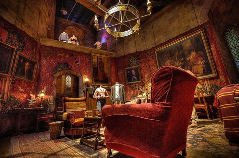
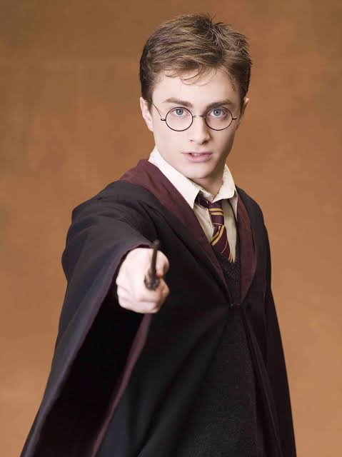
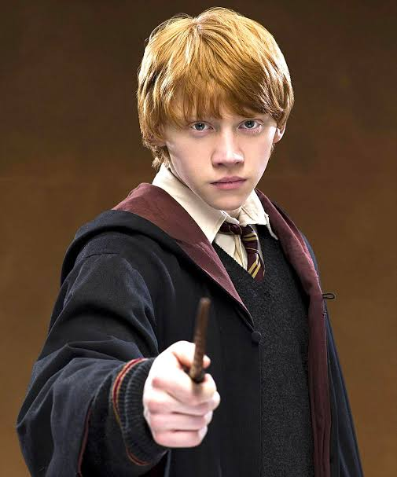

🦁 Gryffindor
"Where dwell the brave at heart."


About Gryffindor
Founded by Godric Gryffindor, this house is home to witches and wizards who value bravery, courage, determination, and chivalry. Gryffindors are known for standing up for what is right, protecting others, and facing even the greatest dangers with confidence and honor.
🛡 Founder: Godric Gryffindor
🦁 Mascot: Lion
❤️ Colors: Scarlet & Gold
⭐ Traits: Courage, Bravery, Nerve, Chivalry
🪄 Head of House: Professor Minerva McGonagall
Famous Gryffindors

Harry Potter
The Boy Who Lived and one of the bravest Gryffindors in Hogwarts history.
Hermione Granger
Brilliant, courageous, and one of the greatest witches of her generation.

Ron Weasley
Loyal friend whose courage and heart helped save the wizarding world.